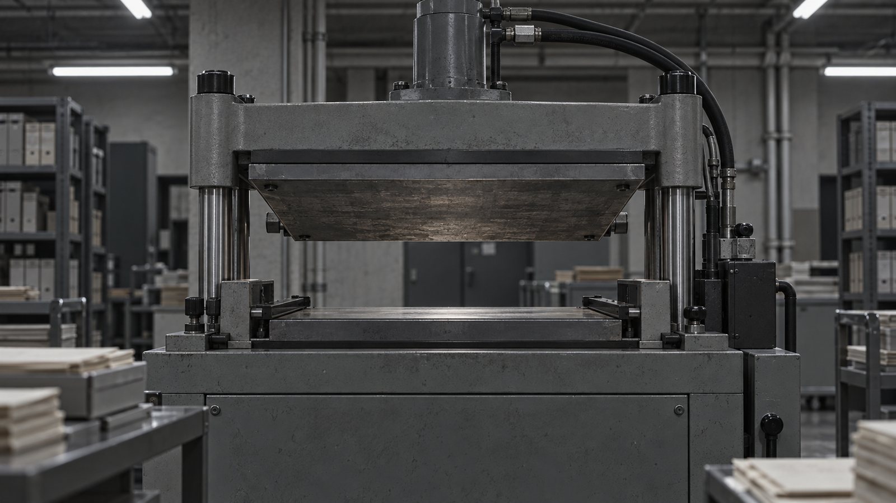
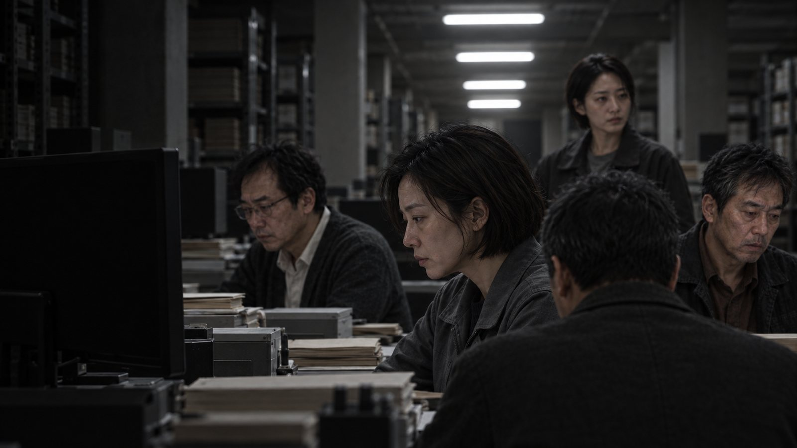
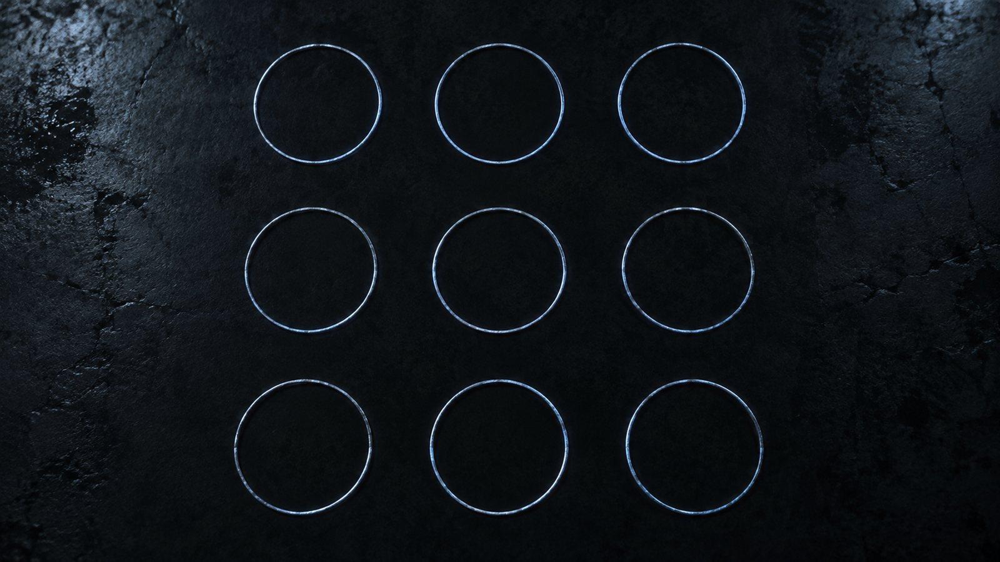
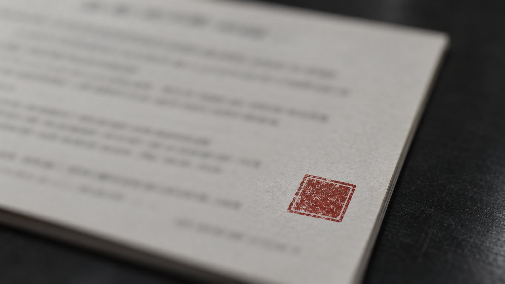
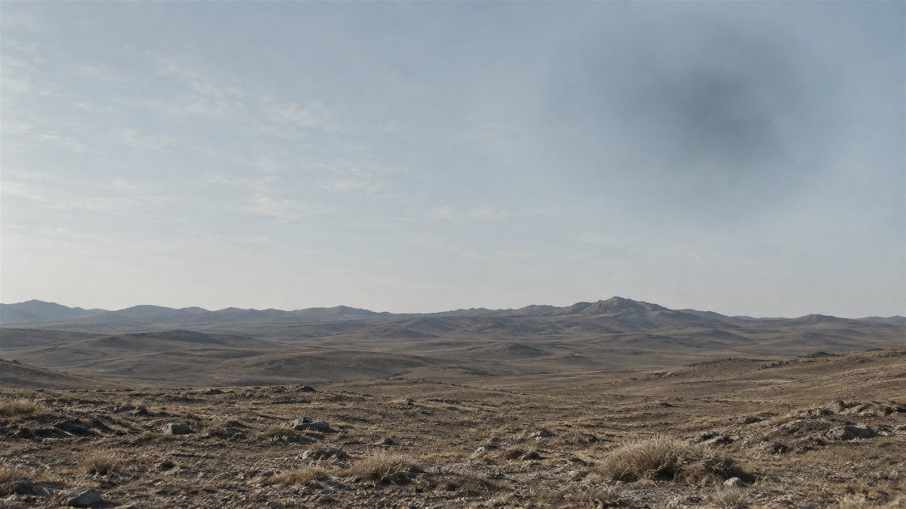
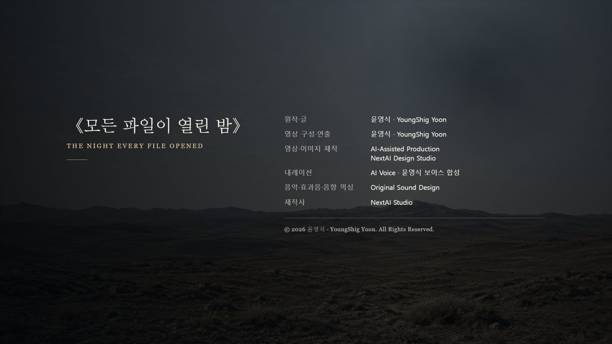

一. 세 단어
내 일은 재는 것이다. 재지 않은 것은 쓰지 않는다.
십사 년 동안 그 원칙 하나로 살았다. 덕분에 내 보고서는 한 번도 반려된 적이 없고, 한 번도 인용된 적도 없다. 숫자만 있는 문서는 아무도 읽지 않는다. 나는 그게 좋았다.
이월 십일일 밤 열한 시에 연락이 왔다.
국가 고고문명 조사 프로젝트 지하 삼층. 항온항습 보관소. 삼 년 전에 실측 원본을 넣어두고 그 뒤로 간 적이 없는 곳이었다.
내려가니 세 사람이 먼저 와 있었다. 서로 아는 사이가 아니었다. 나는 그들의 얼굴을 그때 처음 봤다.
파일 복원을 맡은 사람이 한서진이었다. 압흔 복원은 문해원. 광학 문자 교정은 강도윤. 나는 실측이었다.
우리 넷은 각자 다른 해에 각자 다른 자료를 이 보관소에 넣었다. 서로의 자료를 본 적이 없었다.
한서진: "합쳐져 있습니다."
그는 화면을 돌려 보여주었다. 네 개의 아카이브가 하나의 파일이 되어 있었다. 누가 합쳤는지 기록이 없었다. 합친 시각은 남아 있었다. 밤 열 시 사십일 분.
그 시각에 나는 집에 있었고, 한서진은 퇴근 중이었고, 문해원은 지하철이었고, 강도윤은 자고 있었다.
보관소의 장치들이 전부 같은 것을 표시하고 있었다. 스캐너, 압흔 재현기, 교정 단말, 측량 서버. 서로 연결되어 있지 않은 기기들이었다.
세 단어였다.
ARRIVE / ANGLE / TWO HANDS
현장 책임자가 마지막에 내려왔다. 우리보다 열 살은 어려 보였다.
이 프로젝트에서 우리 넷의 자료를 전부 읽은 사람은 그녀 하나였다. 넷을 부른 것도 그녀였다.
윤서: "지운 사람이 없다는 뜻이에요."
그녀가 한 첫마디였다.
한서진이 파일 맨 아래로 내렸다. 그가 오 년 전에 복구한 그 파일은 마지막 줄이 비어 있는 것으로 끝났다. 그 아래에 뭔가가 붙어 있었다.
우리 넷 중 아무도 붙이지 않았다.
二. 대조
붙어 있는 것은 한 줄이 아니었다. 파일 하나가 통째로 붙어 있었다. 우리 넷의 자료를 다 합친 것보다 컸다.
한서진이 그것의 끝을 먼저 봤다.
한서진: "여기도 맨 아래가 비어 있습니다."
그가 오 년 전에 복구한 파일의 마지막 문장은 아래는 비워둔다였다. 붙은 파일도 같은 자리를 비우고 끝나 있었다.
문해원: "우연 아닙니까."
한서진: "형식입니다. 저쪽도 마지막 줄은 안 채웁니다."
문해원: "왜요."
한서진: "다음이 있다고 보는 거죠."
그날 밤 우리는 각자의 것을 꺼냈다.
문해원의 압흔 자료는 종이 뒷면에 남은 눌린 자국의 깊이와 각도였다. 그녀는 십 년 동안 어머니의 편지 뒷면을 손끝으로 훑어온 사람이었다. 도착한 기록의 표면에도 같은 종류의 자국이 있었다. 잉크가 아니라 눌림으로 적힌 문장.
강도윤은 십이 년 동안 사람의 실수와 기계의 실수를 구분해 온 사람이었다. 기계가 틀리면 말이 되지 않고, 사람이 틀리면 말이 된다. 그게 그의 전부였다.
그가 도착한 기록에서 한 문장을 찾아냈다.
도착은 파괴가 아니다.
그는 그 문장을 오래 봤다.
강도윤: "이건 제가 아는 문장입니다."
그가 재작년에 처리한 십오 세기 필사본에 같은 문장이 있었다. 글자 하나가 어긋나 있었고, 그는 그것을 오식으로 판정했고, 고치지 않고 남겼다.
이제 그 앞의 판본이 여기 있었다. 그의 판정은 틀리지 않았다. 다만 그 어긋남은 기계의 실수도 사람의 실수도 아니었다.
강도윤: "세 번째 종류입니다. 옮길 때마다 한 글자씩 어긋나는 게 아니라, 옮길 때마다 줄인 겁니다. 원래는 이것보다 길었어요."
문해원: "얼마나요."
강도윤: "모릅니다. 줄인 쪽에서 지운 건 남지 않으니까요."
내 자료 차례가 됐다.
나는 삼 년 전에 열아홉 곳의 유적을 실측했고, 그중 두 곳의 방위각이 같은 방향으로 같은 만큼 어긋나 있었다. 흩어지지 않는 오차. 0.4도.
도착한 기록에 그 값이 있었다.
측량값으로 있는 게 아니었다. 설계값으로 있었다. 누가 무엇을 만들면서 일부러 넣은 숫자였다.
십사 년 동안 나는 흩어지지 않는 오차를 값이라고 불러왔다. 그날 밤에야 그게 무슨 뜻인지 알았다. 값은 누가 넣은 것이다.
강도윤이 벽의 단말을 다시 봤다.
강도윤: "ARRIVE는 저 문장입니다. ANGLE은 저 값이고요."
문해원: "TWO HANDS는요."
강도윤: "모릅니다. 아직 안 나왔어요."

三. 읽는 방식
문해원이 압흔 재현기를 켠 것은 새벽 두 시였다.
눌린 자국을 읽으려면 다시 눌러봐야 한다. 같은 압력, 같은 각도, 같은 순서로. 그러면 원래 무엇이 눌렀는지 역산할 수 있다. 그녀가 십 년 동안 손끝으로 하던 일을 기계가 하는 것뿐이었다.
압력은 열두 단계였다. 한 단계에 사십 초.
일곱 번째에서 바닥이 울렸다.
보관소 아래에는 세 겹 구조물이 있다. 삼 년 전 발굴에서 나온 것이고, 옮길 수 없어서 그 위에 보관소를 지었다. 바깥층, 가운데층, 안쪽층. 나는 그 세 층을 재기만 했고 무엇인지는 쓰지 않았다.
가운데층이 하중을 읽는 층이었다.
한서진: "끄세요."
문해원: "지금 끄면 반쪽만 눌린 게 됩니다."
그게 문제였다.
여덟 번째에서 벽의 습도계가 한꺼번에 삼 퍼센트 떨어졌다. 아홉 번째에서 형광등이 한 번 어두워졌다가 돌아왔다. 열 번째부터는 소리가 났다. 아래에서 나는 소리였는데 아래에는 아무것도 없어야 했다.
문해원은 손을 떼지 않았다. 열두 번째까지 갔다.
읽는 방식과 여는 방식이 같았다. 누르는 것으로 적혀 있으니 누르는 것으로 읽어야 하고, 누르면 열린다. 만든 쪽은 그것을 숨기지 않았다. 숨길 이유가 없었을 것이다. 저것을 읽을 줄 아는 자는 이미 저것을 열 자격이 있다고 봤을 테니까.
우리는 자격이 없었다. 방법만 있었다.
윤서가 계단 아래에서 손전등을 껐다 켰다.
윤서: "이건 유적이 아니에요. 멈춘 적이 없어요."

四. 수만 개
새벽 세 시 십사 분에 보관소의 다섯 사람이 동시에 멈췄다.
얼마나 걸렸는지 모른다. 서버 로그로는 사 초였다.
나는 그 사 초 동안 재지 않은 것을 알게 되었다. 십사 년 만에 처음이었다.
들어온 것은 문장이 아니었다. 이유였다. 하나가 아니라 전부였다.
스물세 번째 관문의 정렬을 우리가 먼저 틀었다.
우리는 틀지 않았다. 저쪽이 우리 값을 잘못 옮겼다.
아이가 열이 나서 그날 회의를 사흘 미뤘다.
미룬 사흘 동안 답이 가지 않았고, 답이 없는 것이 답으로 읽혔다.
마그네스의 물 배급은 원래 그해에 줄기로 되어 있었다.
손을 든 사람이 다섯이었고 반대한 사람이 넷이었다.
반대한 넷 중 둘은 그날 자리에 없었다.
아무도 이것을 전쟁의 이유라고 생각하지 않았다.
어떤 것은 크고 어떤 것은 사소했고, 사소한 것이 훨씬 많았다. 순서가 없었고 결론이 없었고 무엇보다 줄여져 있지 않았다.
전쟁의 이유가 수만 개라는 말은 이유가 많다는 뜻이 아니었다. 이유 하나하나가 이만큼 작다는 뜻이었다.
깨어난 뒤에 우리는 서로에게 물었다. 그리고 다섯이 다 다르게 말했다. 내가 받은 것을 문해원은 못 받았고, 문해원이 받은 것을 나는 못 받았다.
강도윤: "다섯이 다 다르게 기억하면 그건 기록이 아닙니다. 오식이에요."
윤서: "아니에요. 줄이지 않은 건 원래 그래요."
그 말이 맞았다.
줄여야 같아진다. 우리가 서로 같은 것을 기억하는 이유는 늘 줄여서 주고받기 때문이다. 저쪽에서 보낸 것은 줄여지지 않았고, 그래서 도착은 했는데 공유가 되지 않았다.
한 사람만 다른 것을 받았다.
윤서는 아무것도 받지 않았다고 했다. 이유도, 장면도, 문장도 없었다고 했다. 대신 자리 하나가 있었다고 했다. 무언가가 있다가 없어진 자리. 손이 놓여 있던 자리 같은 것.
문해원이 도착한 기록의 마지막 층을 읽다가 손을 멈췄다.
눌린 자국 두 개가 나란히 있었다. 사람 손이었다. 하나는 기준선 안쪽에 있었고 값이 적혀 있었다. 다른 하나는 기준선 바깥에 있었고 아무 값도 없었다.
문해원: "세 번째 단어예요."
두 손이었다.
그 옆의 자국 하나에서 그녀가 다시 멈췄다. 소리로 옮기면 두 음절이었다. 윤서의 이름과 같았다.
강도윤이 먼저 말했다.
강도윤: "이건 소견에 넣지 맙시다."
아무도 반대하지 않았다. 윤서도 반대하지 않았다.
우리는 그것을 재지 않은 것으로 두었다.

五. 시차
날이 밝기 전에 궤도에 원이 열렸다.
하나였다가 셋이 되었고 아침에는 아홉이었다. 테두리가 두꺼웠고 안쪽이 짙었다. 관측소 세 곳이 같은 것을 잡았다.
질문은 하나였다. 저것이 오고 있는 물체인가, 아니면 오래전 기록이 재생되는 것인가.
내가 할 수 있는 일이 그것뿐이었다.
두 지점에서 동시에 재면 된다. 가까운 것은 두 지점에서 다르게 보이고, 먼 것은 같게 보인다. 그 차이를 시차라고 한다. 시차에는 두 가지 성질이 있다. 두 지점 사이가 멀수록 커지고, 두 지점을 잇는 방향으로 벌어진다. 이건 이백 년 된 방법이고 틀린 적이 없다.
남북으로 사십 킬로미터 떨어진 두 관측소로 쟀다. 0.4도.
동서로 삼백팔십 킬로미터로 쟀다. 0.4도.
대각으로 천백 킬로미터로 쟀다. 0.4도.
나는 계산기를 세 번 다시 두드렸다.
기선을 스물일곱 배 늘려도 같고, 방향을 구십 도 돌려도 같았다. 길이에도 방향에도 반응하지 않는 각도는 시차가 아니다. 관측 기하에서 나오는 값이 아니라는 뜻이다.
우리가 재고 있는 게 아니었다.
관측소 아홉 곳이 하늘에서 아홉 개를 본 것이 아니었다. 하나의 값이 아홉 번 읽힌 것이었다. 우리 장비는 저것을 관측한 게 아니라 받아 적고 있었다.
한서진: "그게 무슨 뜻입니까."
나: "저건 물체가 아니라 좌표라는 뜻입니다. 그리고 그 좌표에 0.4도가 붙어 있습니다."
누군가 좌표를 부르고 있었다. 만든 쪽이 넣은 값이 아직 살아 있었다. 수천 년 동안 아무도 그 값을 빼지 않았다.
그러면 오는 것은 여기로 오지 않는다.
0.4도 옆으로 온다.
한서진이 도착한 기록에서 그 좌표를 뽑아 화면에 띄웠다.
나는 그 숫자를 알고 있었다.
삼 년 전에 두 유적의 어긋난 축을 연장해서 나온 교점이었다. 아무것도 없는 땅이었다. 나는 그 좌표를 보고서 부록에 넣었다.
설명은 달지 않았다. 해석을 쓰면 숫자까지 같이 버려진다고 생각했다. 그래서 숫자만 남겼다.
소수점 아래 다섯 자리까지 같았다.
문해원: "이걸 어떻게 아셨어요."
나: "제가 쓴 겁니다."
그 부록은 그 뒤로 열아홉 편의 논문에 인용되었다. 세 나라의 공개 지도에 점으로 찍혔다. 아무도 그게 뭔지 모른 채로.
삼 년 전에 그곳은 아무것도 없는 땅이었다. 지금은 표시된 땅이다. 표시한 것은 나다.
숫자만 남기면 아무나 쓴다. 나는 그걸 그날 아침에 알았다.

六. 나누는 일
낮 두 시에 상급 기관의 지시가 내려왔다.
파일 전면 삭제. 보관소 폐쇄. 세 겹 구조물 매립.
근거는 명확했다. 파일이 도착하면서 구조물이 깨어났으니 파일을 없애면 멎을 것이다.
한서진이 먼저 반대했다.
한서진: "세 번 그랬다고 적혀 있습니다."
그가 오 년 전에 복구한 그 파일에는 그 문장이 있다. 넘어가지 마라, 넘어가면 여기가 지워진다, 세 번 그랬다. 지워진 쪽이 남긴 문장이었다.
세 번 지워졌고 세 번 다시 있었다.
한서진: "지우는 건 이미 해본 방법입니다. 저쪽이 해봤어요."
윤서: "삭제하면 구조물이 멎는다는 건 아직 안 재봤어요. 삭제하면 원인이 없어진다는 건 확실하고요."
한서진: "그럼 남깁니까. 남기면 또 열립니다."
윤서: "한 군데 두면 그렇죠."
그녀는 세 번째를 골랐다.
원본은 지하에 그대로 둔다. 대신 복호화 키를 열한 조각으로 나눈다. 국가기록원, 대학 네 곳, 지역 도서관 세 곳, 관측소 두 곳, 민간 보존회 하나. 여는 데 열한 곳이 필요하다.
강도윤: "우리 다섯은 이미 봤습니다."
윤서: "다섯이 다 다르게 봤잖아요."
그것도 맞았다. 우리 다섯을 한자리에 모아도 그 파일은 복원되지 않는다. 우리는 각자 자기가 받은 것만 갖고 있고, 그것들은 서로 맞지 않는다.
지시는 취소되지 않았다. 윤서가 분산안을 대신 올렸고 조건이 붙었다. 그녀는 현장 책임자에서 내려왔다.
윤서: "책임자가 아니면 지시를 안 받아도 돼요."
키를 열한 곳으로 옮기는 데 사흘이 걸렸다.
나: "우리는 뭡니까."
재지 않은 것을 내가 물은 건 그때가 처음이었다.
윤서: "우리는 치우도 르네도 아니에요."
나: "그럼 뭐죠."
윤서: "두 종족이 남긴 결과를 보고, 어느 쪽도 반복하지 않을 수 있는 사람들이요."
좋은 말이었다. 좋은 말이라서 나는 그것을 믿지 않았다.
윤서도 믿지 않는 것 같았다. 마지막 상자를 봉하면서 그녀가 말했다.
윤서: "이채원 선생님. 이것도 줄이는 거예요. 알고 해요."
내 이름이 불린 것은 그때가 처음이었다. 삼 년 전 보고서에도 내 이름은 표지에만 있었다.
열한 개로 나누면 아무도 전부를 못 본다. 전부를 못 보면 각자가 자기 몫으로 이야기를 만든다. 그게 줄이는 일이다. 우리는 저쪽이 수만 개를 줄이지 않고 보낸 그 다음 날에 그것을 열한 개로 잘랐다.
그것 말고는 방법이 없었다.
방법이 없다는 것은 옳다는 뜻이 아니다.
사흘 뒤에도 윤서는 보관소에 나왔다. 직함은 없었다.

七. 고른 자리가 아니다
나흘 뒤에 나는 그 좌표로 갔다.
혼자 갔다. 잴 것이 없는 땅이었다. 삼 년 전에도 그랬다.
삼각대를 폈다. 다리 길이를 맞췄다. 수준기를 봤다. 기포가 가운데 들어오는 데 늘 걸리던 만큼 걸렸다. 그건 하나도 달라지지 않았다.
원은 그 위에 있었다.
보고서를 새로 쓰지는 않았다. 삼 년 전 보고서의 부록을 열고 좌표 아래에 한 줄을 붙였다.
이 좌표는 우리가 고른 자리가 아니다.
삼 년 전에 나는 이 줄을 쓰지 않았다. 쓰면 숫자까지 버려진다고 생각했다. 그 판단은 지금도 틀리지 않았다. 이 줄 때문에 누군가는 이 숫자를 버릴 것이다.
그래도 붙였다.
이것도 줄인 것이다. 그날 밤에 온 수만 개를 한 줄로 줄인 것이다. 나는 그걸 알면서 붙였고, 지우지 않았다.
기포를 다시 봤다. 가운데에 있었다.
고개를 들었다.
관측기로는 저것이 값이라는 걸 안다. 값이면 눈에 보일 이유가 없다.
원 안쪽에 형체가 있었다. 가장자리가 흐리고 안쪽이 짙었다. 나는 각을 쟀다. 열 번 쟀다. 열 번 다 같은 값이 나왔다. 흩어지지 않았다.
나오는 값은 다 나왔다.
저것이 오고 있는 것인지, 오래전에 온 것의 자국인지는 나오지 않았다.
나는 그 칸을 비워두었다.
